Le dix-neuvième trou d’Atalayoun.
Après le golf, ou sans y avoir joué : le meilleur de la mer, face à la lagune de Marchica, aux greens et aux montagnes.
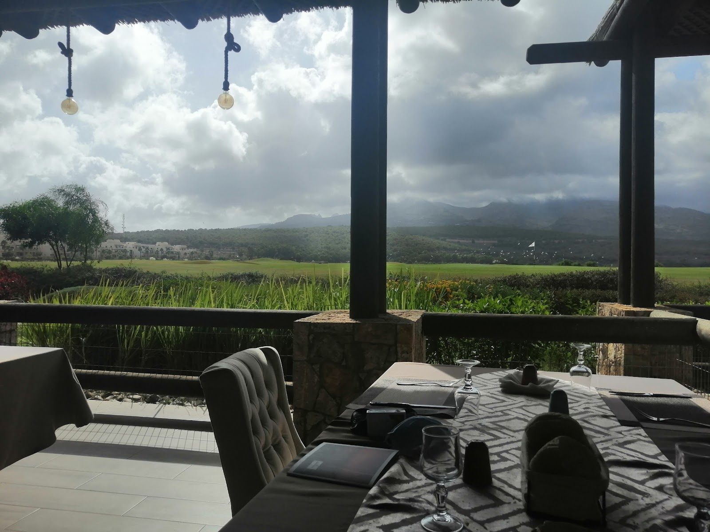
Trois vues depuis la même table
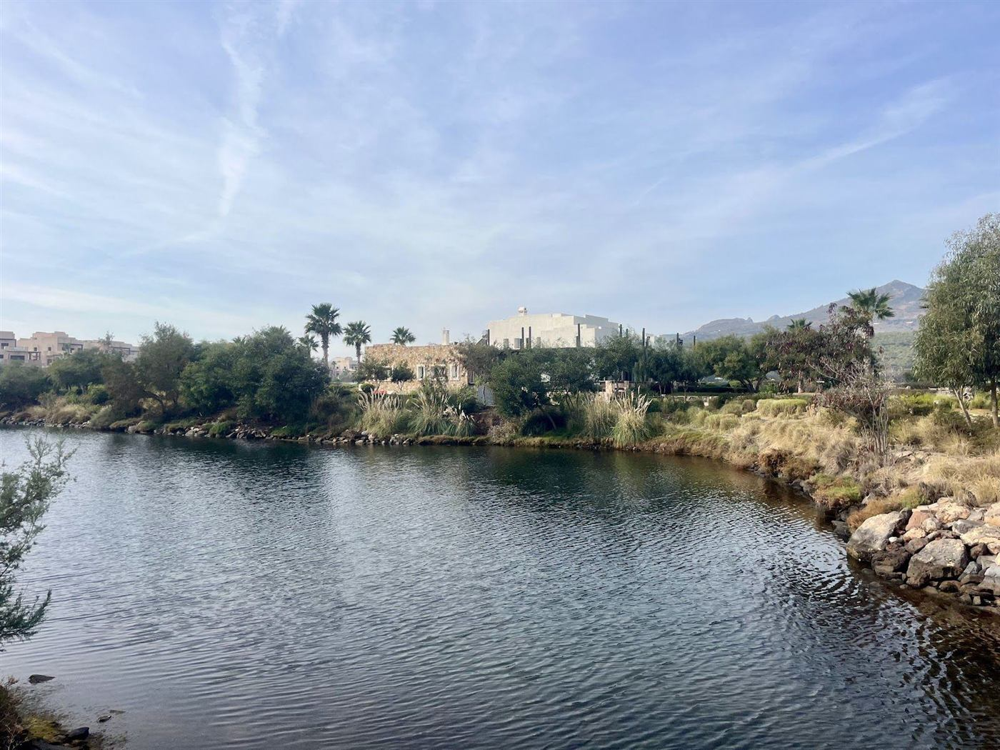
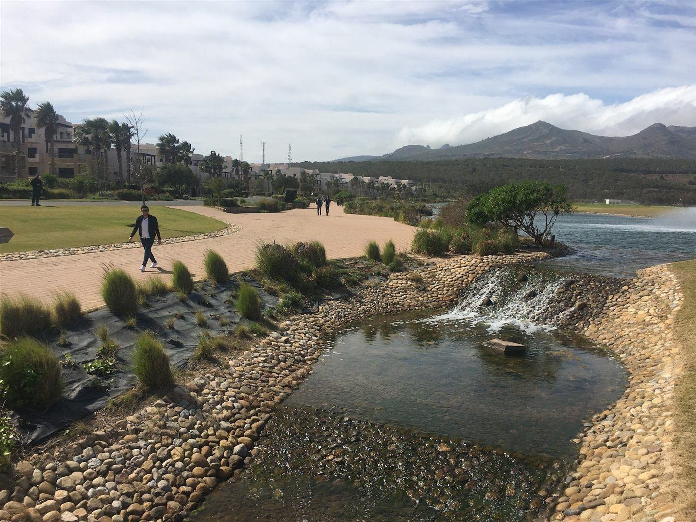
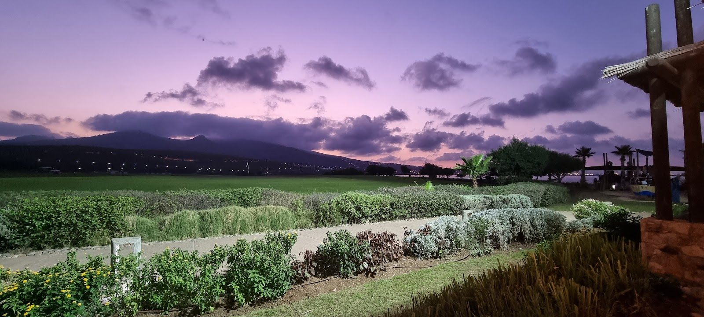
« Excellent restaurant avec des vues impressionnantes sur la lagune, le golf et les montagnes. La cuisine est délicieuse. »
Taher Houass, Google
Le meilleur de la mer, dans la vaisselle bleue
Le poisson frais attend dans la vitrine. Langouste, crevettes, soles, calamars, servis dans les assiettes bleu et blanc de la maison.
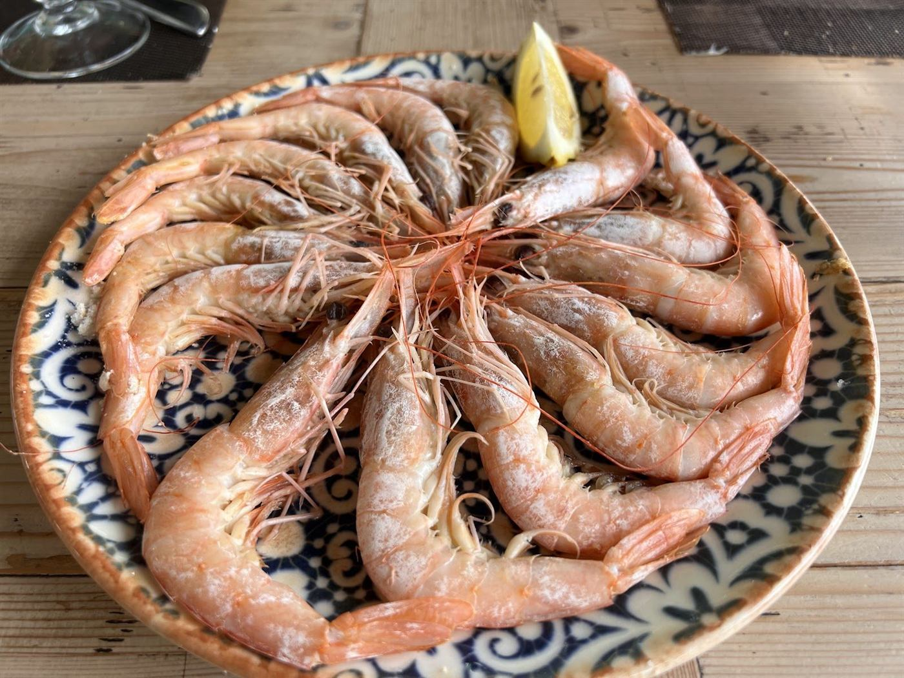
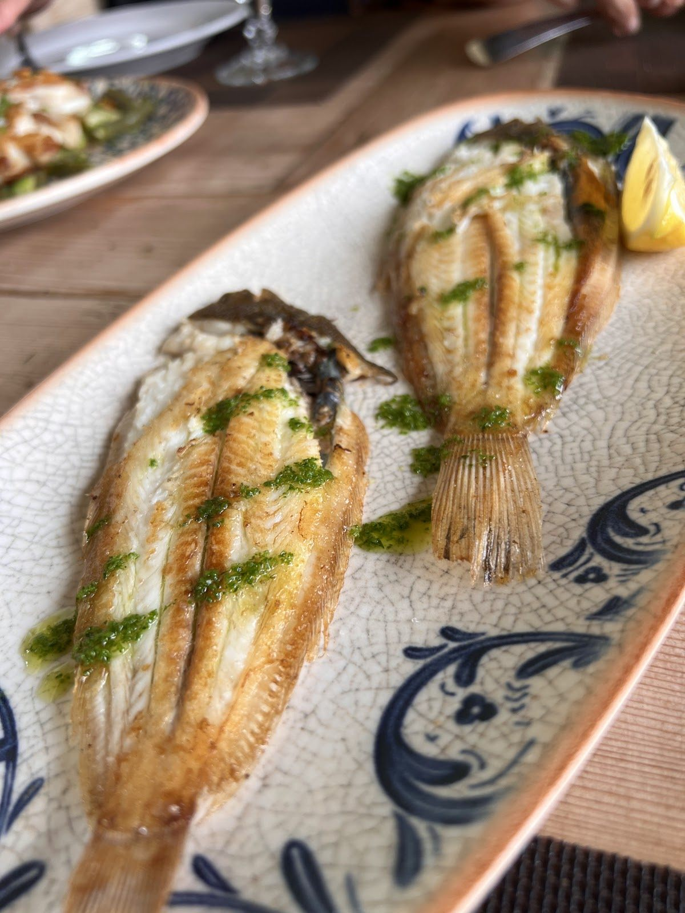
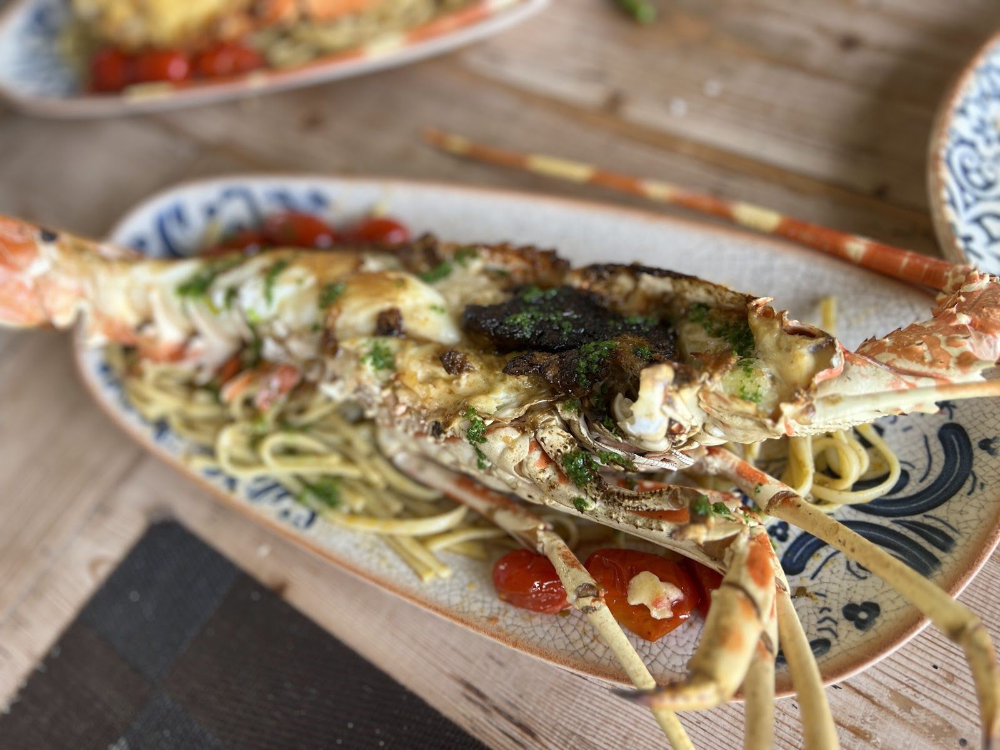
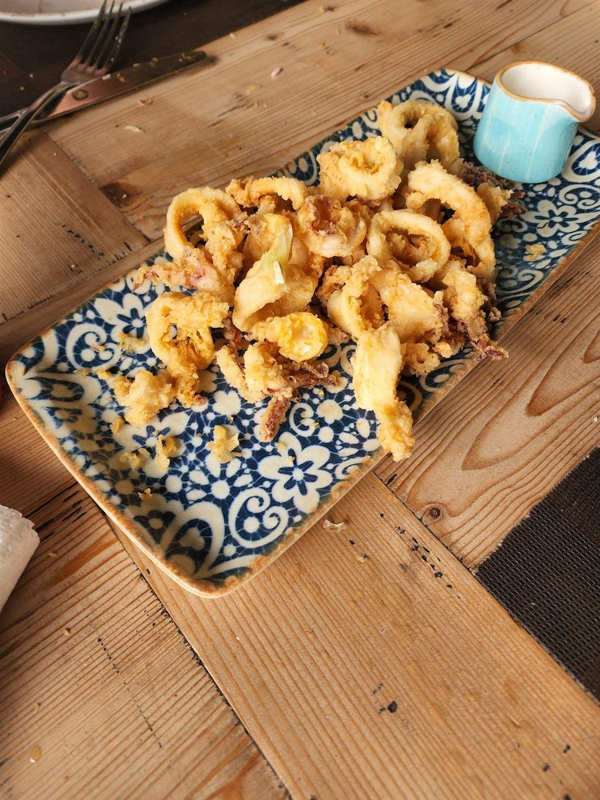
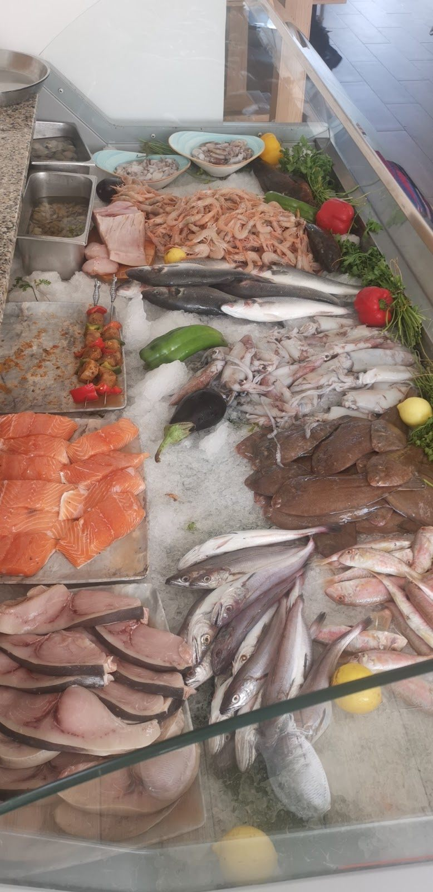
La carte de score
Une partie de la carte, avec ses prix. Le poisson du jour se demande en salle.
Coin italien
| Spaghetti alla Bolognese | 80 |
|---|---|
| Linguine ai Frutti di Mare | 110 |
| Risotto di Pollo ai Funghi | 90 |
| Risotto alla Pescatora | 110 |
Desserts
| Flan au touron | 40 |
|---|---|
| Tiramisu | 40 |
| Panna cotta | 40 |
| Crème brûlée | 40 |
| Tarte au citron | 40 |
| Tarte aux trois chocolats | 40 |
| Fruits de saison | 40 |
Ramadan
Menu de rupture du jeûne : soupe de poisson ou harira, puis croquettes, rouleaux et tartelettes au centre de la table.
Prix en dirhams.
Un dernier putt avant le dîner
Tirez la balle vers l’arrière, visez et relâchez. Le trou, c’est votre table.
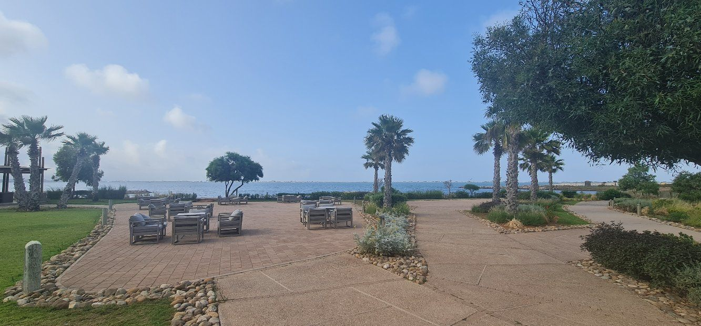
Pendant que les enfants jouent
Une aire de jeux juste en face du restaurant, la plage et la promenade tout près. Les parents déjeunent, les enfants courent.
Ce qu’en disent les joueurs, et les autres
4,2 sur Google, 171 avis
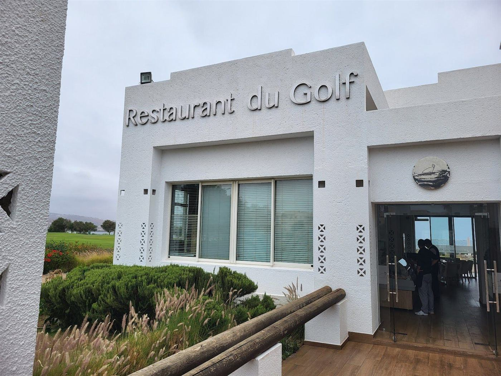
Atalayoun, route N15
- Horaires
- Lundi à samedi, 12 h 30 à 23 h
Dimanche, 12 h à 23 h - Réservations
- +212 654 50 87 69
- @restaurant.du.golf.nador